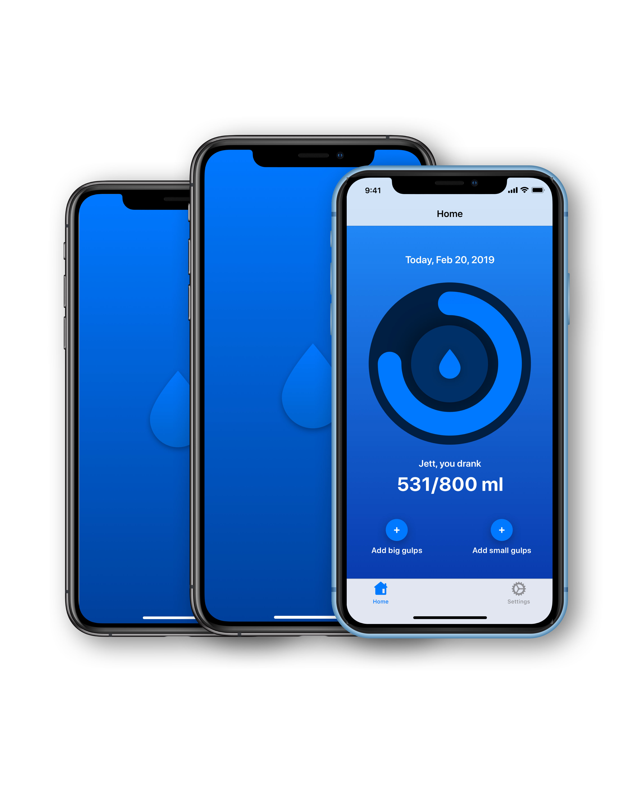
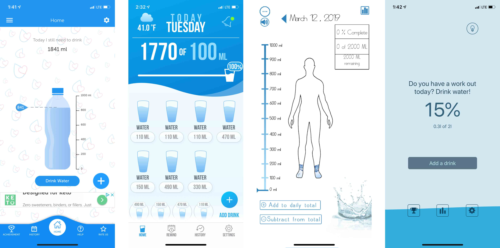
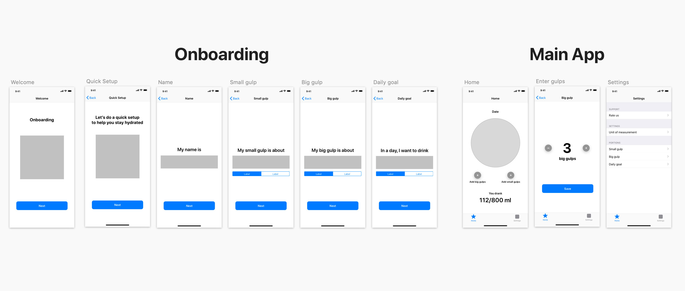
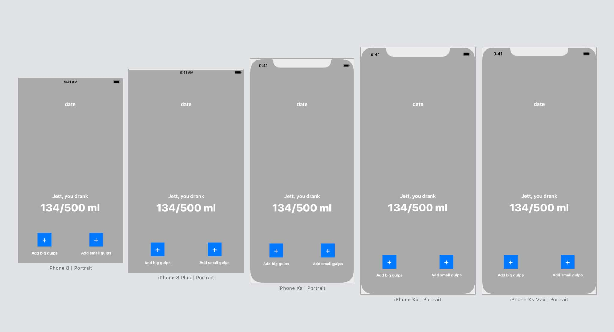
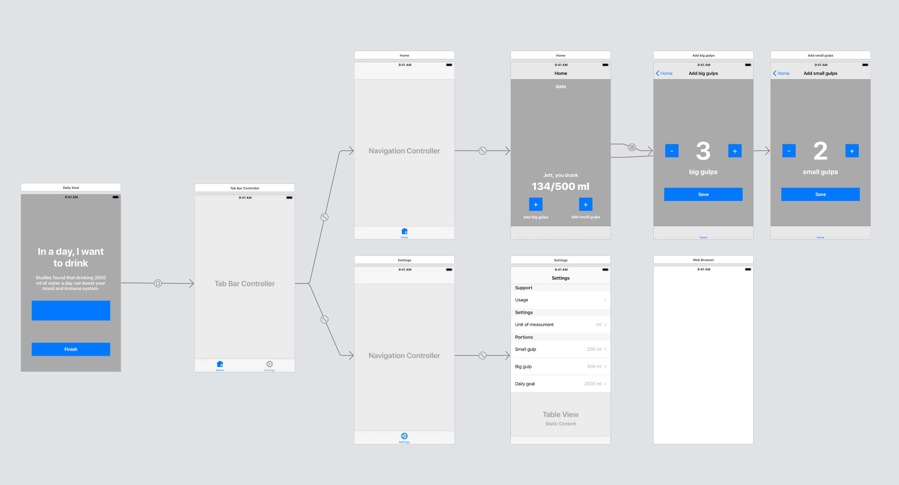

Gulpz
an iOS application
Summary:
“Gulpz” is an iOS application that helps users keep track of their daily water intake using gulp as the measurement. The goals of this project were:
- To become familiar with Xcode and Swift language.
- To create a simple, intuitive way of entering water intake
- To improve the UI design
Background:
One of my original ideas was to create a simple water tracking app. I remember having tried many different water tracking apps on the App Store, but none of them worked because:
{kind=link}
- Poor mobile experience:
- Liquid measurements:
The interface of these apps is either overcrowded with unnecessary visual elements or they do not show enough visual cues. There are also issues with readability, white space balance and alignment. I want the UI to be less clutter and have one focal point.
There should be a simpler, “universal” way of entering water intake without being confused by large numbers, metric and imperial.
Design Process:
- Sketch Mockup:
- Onboarding: is for the initial setup where users enter their name, big and small gulp, and how much water they want to drink in a day. Users can always change their input data in the settings later.
- The main app: is what users will see after they finish the onboarding or the second time they open the app.
The app was split into two parts: onboading and main app:
{kind=link}
Since this is an Xcode-focused class and I am new to Swift language, I wanted to make sure I could turn my design into code while maintaining the aesthetic yet well functioning application.
- Xcode: 
{kind=link}
With the Sketch mockup in hand, it was much easier to translate the design into Xcode’s Storyboard and determine the right constraints and spaces between elements. Just as in responsive web, the app needs to be responsive and viewable on as many devices as possible. I finally managed to have the app’s interface viewable from the iPhone 6 to the iPhone XS Max (12 iPhones in total) by using the Auto Layout constraints in Xcode.
{kind=link}

To turn the water ring design into Swift, I used a software called PaintCode — “PaintCode is a vector drawing app that generates Objective-C or Swift code in real time” This software saved a considerable amount of time when converting the ring into code.
Results:
After 10 weeks, the app was largely finalized after many refinements and bug fixes in the design and development phases. Users are now able to:
- Initially setup the app through onboarding
- Add the water intake using small and big gulps
- Change the daily water intake
- Convert between ml and oz
{kind=link}
{kind=link}
{kind=link}
{kind=link}